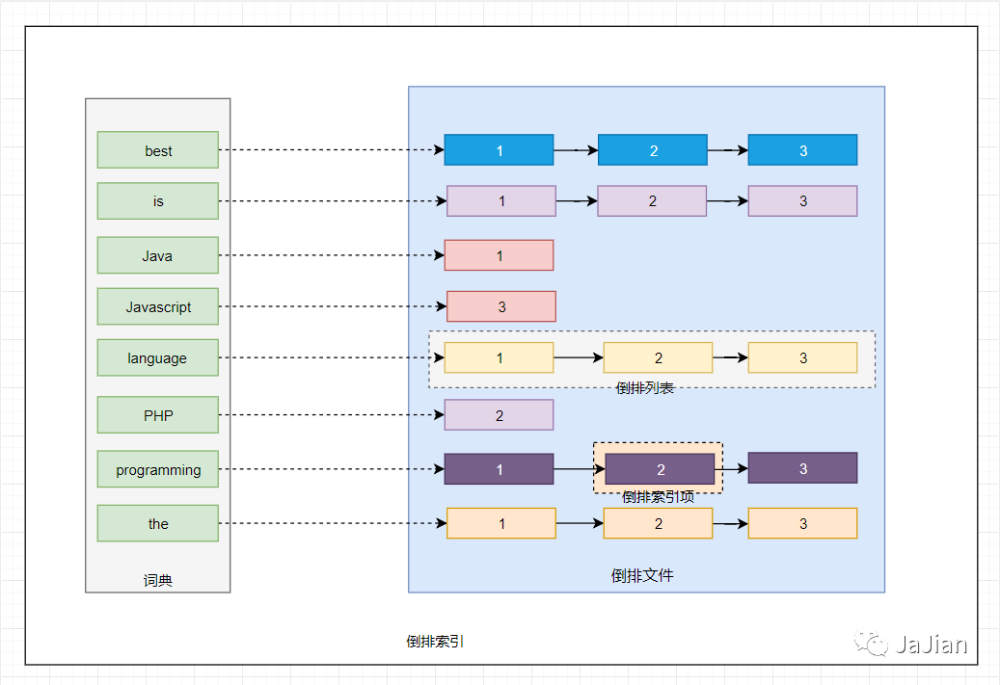
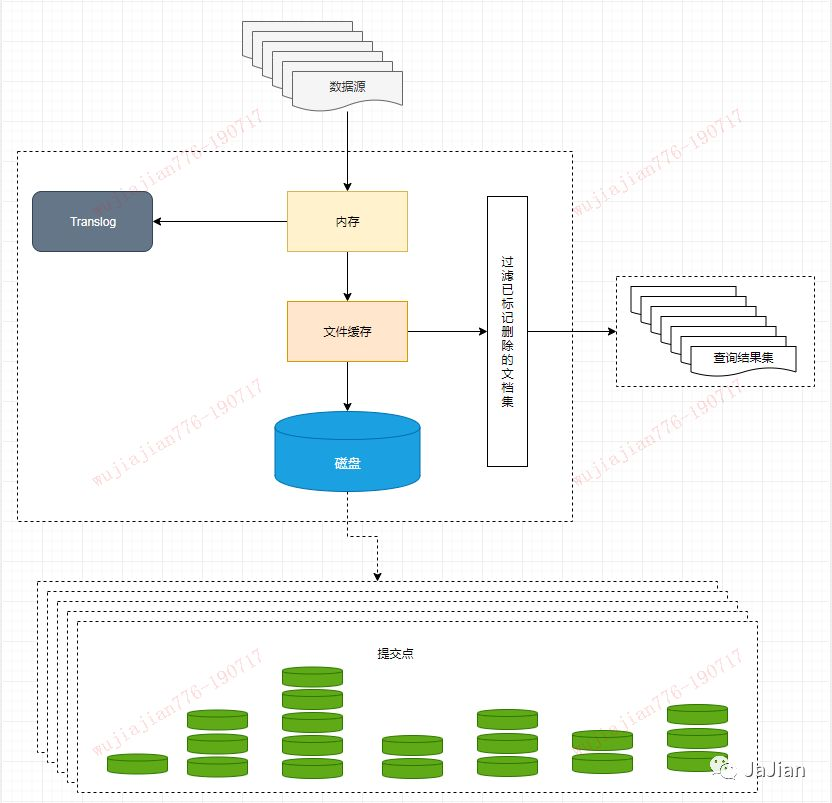

全文搜索引擎Elasticsearch，这篇文章给讲透了！
文章转载自公众号小菜亦牛， 作者 JaJian之前已经分享过Elasticsearch的使用和原理的知识，由于近期在公司内部做了一次分享，所以本篇主要是基于之前的博文的一个总结，希望通过这篇文章能让读者大致了解Elasticsearch是做什么的以及它的使用和基本原理。
生活中的数据
搜索引擎是对数据的检索，所以我们先从生活中的数据说起。
我们生活中的数据总体分为两种：结构化数据 和 非结构化数据。
结构化数据：也称作行数据，是由二维表结构来逻辑表达和实现的数据，严格地遵循数据格式与长度规范，主要通过关系型数据库进行存储和管理。指具有固定格式或有限长度的数据，如数据库，元数据等。
非结构化数据：又可称为全文数据，不定长或无固定格式，不适于由数据库二维表来表现，包括所有格式的办公文档、XML、HTML、word文档，邮件，各类报表、图片和咅频、视频信息等。
说明：如果要更细致的区分的话，XML、HTML可划分为 半结构化数据。因为它们也具有自己特定的标签格式，所以既可以根据需要按结构化数据来处理，也可抽取出纯文本按非结构化数据来处理。
根据两种数据分类，搜索也相应的分为两种：结构化数据搜索和非结构化数据搜索。
对于结构化数据，因为它们具有特定的结构，所以我们一般都是可以通过关系型数据库（mysql，oracle等）的 二维表（table）的方式存储和搜索，也可以建立索引。
对于非结构化数据，也即对全文数据的搜索主要有两种方法：顺序扫描法，全文检索。
顺序扫描：通过文字名称也可了解到它的大概搜索方式，即按照顺序扫描的方式查询特定的关键字。例如给你一张报纸，让你找到该报纸中“平安”的文字在哪些地方出现过。你肯定需要从头到尾把报纸阅读扫描一遍然后标记出关键字在哪些版块出现过以及它的出现位置。
这种方式无疑是最耗时的最低效的，如果报纸排版字体小，而且版块较多甚至有多份报纸，等你扫描完你的眼睛也差不多了。
全文搜索：对非结构化数据顺序扫描很慢，我们是否可以进行优化？把我们的非结构化数据想办法弄得有一定结构不就行了吗？将非结构化数据中的一部分信息提取出来，重新组织，使其变得有一定结构，然后对此有一定结构的数据进行搜索，从而达到搜索相对较快的目的。
这种方式就构成了全文检索的基本思路。这部分从非结构化数据中提取出的然后重新组织的信息，我们称之索引。这种方式的主要工作量在前期索引的创建，但是对于后期搜索却是快速高效的。
先说说Lucene
通过对生活中数据的类型作了一个简短了解之后，我们知道关系型数据库的SQL检索是处理不了这种非结构化数据的。这种非结构化数据的处理需要依赖全文搜索，而目前市场上开放源代码的最好全文检索引擎工具包就属于 apache 的 Lucene了。
但是 Lucene 只是一个工具包，它不是一个完整的全文检索引擎。Lucene的目的是为软件开发人员提供一个简单易用的工具包，以方便的在目标系统中实现全文检索的功能，或者是以此为基础建立起完整的全文检索引擎。
目前以 Lucene 为基础建立的开源可用全文搜索引擎主要是 Solr 和 Elasticsearch。
Solr 和 Elasticsearch 都是比较成熟的全文搜索引擎，能完成的功能和性能也基本一样。但是 ES 本身就具有分布式的特性和易安装使用的特点，而Solr的分布式需要借助第三方来实现，例如通过使用ZooKeeper来达到分布式协调管理。
不管是 Solr 还是 Elasticsearch 底层都是依赖于 Lucene，而 Lucene 能实现全文搜索主要是因为它实现了倒排索引的查询结构。
如何理解倒排索引呢？假如现有三份数据文档，文档的内容如下分别是：
Java is the best programming language.
PHP is the best programming language.
Javascript is the best programming language.
为了创建倒排索引，我们通过分词器将每个文档的内容域拆分成单独的词（我们称它为词条或 Term），创建一个包含所有不重复词条的排序列表，然后列出每个词条出现在哪个文档。结果如下所示：
TermDoc_1Doc_2Doc_3
-------------------------------------
Java| X ||
is| X | X | X
the | X | X | X
best | X | X | X
programming | x | X | X
language | X | X | X
PHP || X |
Javascript||| X
-------------------------------------
这种结构由文档中所有不重复词的列表构成，对于其中每个词都有一个文档列表与之关联。这种由属性值来确定记录的位置的结构就是倒排索引。带有倒排索引的文件我们称为倒排文件。
我们将上面的内容转换为图的形式来说明倒排索引的结构信息，如下图所示，

其中主要有如下几个核心术语需要理解：
词条(Term)：索引里面最小的存储和查询单元，对于英文来说是一个单词，对于中文来说一般指分词后的一个词。
词典(Term Dictionary)：或字典，是词条Term的集合。搜索引擎的通常索引单位是单词，单词词典是由文档集合中出现过的所有单词构成的字符串集合，单词词典内每条索引项记载单词本身的一些信息以及指向“倒排列表”的指针。
倒排表(Post list)：一个文档通常由多个词组成，倒排表记录的是某个词在哪些文档里出现过以及出现的位置。每条记录称为一个倒排项(Posting)。倒排表记录的不单是文档编号，还存储了词频等信息。
倒排文件(Inverted File)：所有单词的倒排列表往往顺序地存储在磁盘的某个文件里，这个文件被称之为倒排文件，倒排文件是存储倒排索引的物理文件。
从上图我们可以了解到倒排索引主要由两个部分组成：词典和倒排文件。词典和倒排表是Lucene中很重要的两种数据结构，是实现快速检索的重要基石。词典和倒排文件是分两部分存储的，词典在内存中而倒排文件存储在磁盘上。
核心概念
一些基础知识的铺垫之后我们正式进入今天的主角Elasticsearch的介绍， ES是使用Java编写的一种开源搜索引擎，它在内部使用Lucene做索引与搜索，通过对Lucene的封装，隐藏了Lucene的复杂性，取而代之的提供一套简单一致的 RESTful API。
然而，Elasticsearch 不仅仅是 Lucene，并且也不仅仅只是一个全文搜索引擎。它可以被下面这样准确的形容：
一个分布式的实时文档存储，每个字段可以被索引与搜索。
一个分布式实时分析搜索引擎。
能胜任上百个服务节点的扩展，并支持 PB 级别的结构化或者非结构化数据。
官网对Elasticsearch的介绍是Elasticsearch 是一个分布式、可扩展、近实时的搜索与数据分析引擎。我们通过一些核心概念来看下Elasticsearch 是如何做到分布式，可扩展和近实时搜索的。
集群（Cluster）
ES的集群搭建很简单，不需要依赖第三方协调管理组件，自身内部就实现了集群的管理功能。ES集群由一个或多个Elasticsearch节点组成，每个节点配置相同的 cluster.name 即可加入集群，默认值为 “elasticsearch”。确保不同的环境中使用不同的集群名称，否则最终会导致节点加入错误的集群。
一个Elasticsearch服务启动实例就是一个节点（Node）。节点通过 node.name来设置节点名称，如果不设置则在启动时给节点分配一个随机通用唯一标识符作为名称。
发现机制
那么有一个问题，ES内部是如何通过一个相同的设置 cluster.name 就能将不同的节点连接到同一个集群的？答案是 ZenDiscovery。
Zen Discovery是Elasticsearch的内置默认发现模块（发现模块的职责是发现集群中的节点以及选举master节点）。它提供单播和基于文件的发现，并且可以扩展为通过插件支持云环境和其他形式的发现。Zen Discovery 与其他模块集成，例如，节点之间的所有通信都使用Transport模块完成。节点使用发现机制通过Ping的方式查找其他节点。
Elasticsearch 默认被配置为使用单播发现，以防止节点无意中加入集群。只有在同一台机器上运行的节点才会自动组成集群。
如果集群的节点运行在不同的机器上，使用单播，你可以为 Elasticsearch 提供一些它应该去尝试连接的节点列表。当一个节点联系到单播列表中的成员时，它就会得到整个集群所有节点的状态，然后它会联系 master 节点，并加入集群。
这意味着单播列表不需要包含集群中的所有节点， 它只是需要足够的节点，当一个新节点联系上其中一个并且说上话就可以了。如果你使用 master 候选节点作为单播列表，你只要列出三个就可以了。这个配置在 elasticsearch.yml 文件中：
discovery.zen.ping.unicast.hosts:["host1","host2:port"]
节点启动后先 ping ，如果 discovery.zen.ping.unicast.hosts 有设置，则 ping 设置中的 host ，否则尝试 ping localhost 的几个端口， Elasticsearch 支持同一个主机启动多个节点， Ping 的 response 会包含该节点的基本信息以及该节点认为的 master 节点。选举开始，先从各节点认为的 master 中选，规则很简单，按照 id 的字典序排序，取第一个。如果各节点都没有认为的 master ，则从所有节点中选择，规则同上。
这里有个限制条件就是 discovery.zen.minimum_master_nodes ，如果节点数达不到最小值的限制，则循环上述过程，直到节点数足够可以开始选举。最后选举结果是肯定能选举出一个 master ，如果只有一个 local 节点那就选出的是自己。如果当前节点是 master ，则开始等待节点数达到 discovery.zen.minimummasternodes，然后提供服务。如果当前节点不是 master ，则尝试加入 master 。Elasticsearch 将以上服务发现以及选主的流程叫做 ZenDiscovery 。
由于它支持任意数目的集群（ 1- N ），所以不能像 Zookeeper 那样限制节点必须是奇数，也就无法用投票的机制来选主，而是通过一个规则，只要所有的节点都遵循同样的规则，得到的信息都是对等的，选出来的主节点肯定是一致的。但分布式系统的问题就出在信息不对等的情况，这时候很容易出现脑裂（ Split-Brain ）的问题，大多数解决方案就是设置一个 quorum 值，要求可用节点必须大于 quorum （一般是超过半数节点），才能对外提供服务。而 Elasticsearch 中，这个 quorum 的配置就是 discovery.zen.minimum_master_nodes 。
节点的角色
每个节点既可以是候选主节点也可以是数据节点，通过在配置文件 ../config/elasticsearch.yml中设置即可，默认都为 true。
node.master:true//是否候选主节点
node.data:true//是否数据节点
数据节点负责数据的存储和相关的操作，例如对数据进行增、删、改、查和聚合等操作，所以数据节点（data节点）对机器配置要求比较高，对CPU、内存和I/O的消耗很大。通常随着集群的扩大，需要增加更多的数据节点来提高性能和可用性。
候选主节点可以被选举为主节点（master节点），集群中只有候选主节点才有选举权和被选举权，其他节点不参与选举的工作。主节点负责创建索引、删除索引、跟踪哪些节点是群集的一部分，并决定哪些分片分配给相关的节点、追踪集群中节点的状态等，稳定的主节点对集群的健康是非常重要的。

一个节点既可以是候选主节点也可以是数据节点，但是由于数据节点对CPU、内存核I/0消耗都很大，所以如果某个节点既是数据节点又是主节点，那么可能会对主节点产生影响从而对整个集群的状态产生影响。
因此为了提高集群的健康性，我们应该对Elasticsearch集群中的节点做好角色上的划分和隔离。可以使用几个配置较低的机器群作为候选主节点群。
主节点和其他节点之间通过Ping的方式互检查，主节点负责Ping所有其他节点，判断是否有节点已经挂掉。其他节点也通过Ping的方式判断主节点是否处于可用状态。
虽然对节点做了角色区分，但是用户的请求可以发往任何一个节点，并由该节点负责分发请求、收集结果等操作，而不需要主节点转发，这种节点可称之为协调节点，协调节点是不需要指定和配置的，集群中的任何节点都可以充当协调节点的角色。
脑裂现象
同时如果由于网络或其他原因导致集群中选举出多个Master节点，使得数据更新时出现不一致，这种现象称之为脑裂，即集群中不同的节点对于master的选择出现了分歧，出现了多个master竞争。
“脑裂”问题可能有以下几个原因造成：
网络问题：集群间的网络延迟导致一些节点访问不到master，认为master挂掉了从而选举出新的master，并对master上的分片和副本标红，分配新的主分片
节点负载：主节点的角色既为master又为data，访问量较大时可能会导致ES停止响应（假死状态）造成大面积延迟，此时其他节点得不到主节点的响应认为主节点挂掉了，会重新选取主节点。
内存回收：主节点的角色既为master又为data，当data节点上的ES进程占用的内存较大，引发JVM的大规模内存回收，造成ES进程失去响应。
为了避免脑裂现象的发生，我们可以从原因着手通过以下几个方面来做出优化措施：
适当调大响应时间，减少误判通过参数
discovery.zen.ping_timeout设置节点状态的响应时间，默认为3s，可以适当调大，如果master在该响应时间的范围内没有做出响应应答，判断该节点已经挂掉了。调大参数（如6s，discovery.zen.ping_timeout:6），可适当减少误判。选举触发我们需要在候选集群中的节点的配置文件中设置参数
discovery.zen.munimum_master_nodes的值，这个参数表示在选举主节点时需要参与选举的候选主节点的节点数，默认值是1，官方建议取值(master_eligibel_nodes/2)+1，其中master_eligibel_nodes为候选主节点的个数。这样做既能防止脑裂现象的发生，也能最大限度地提升集群的高可用性，因为只要不少于discovery.zen.munimum_master_nodes个候选节点存活，选举工作就能正常进行。当小于这个值的时候，无法触发选举行为，集群无法使用，不会造成分片混乱的情况。角色分离即是上面我们提到的候选主节点和数据节点进行角色分离，这样可以减轻主节点的负担，防止主节点的假死状态发生，减少对主节点“已死”的误判。
分片（Shards）
ES支持PB级全文搜索，当索引上的数据量太大的时候，ES通过水平拆分的方式将一个索引上的数据拆分出来分配到不同的数据块上，拆分出来的数据库块称之为一个分片。
这类似于MySql的分库分表，只不过Mysql分库分表需要借助第三方组件而ES内部自身实现了此功能。
在一个多分片的索引中写入数据时，通过路由来确定具体写入哪一个分片中，所以在创建索引的时候需要指定分片的数量，并且分片的数量一旦确定就不能修改。
分片的数量和下面介绍的副本数量都是可以通过创建索引时的 settings来配置，ES默认为一个索引创建5个主分片, 并分别为每个分片创建一个副本。
PUT /myIndex
{
"settings":{
"number_of_shards":5,
"number_of_replicas":1
}
}
ES通过分片的功能使得索引在规模上和性能上都得到提升，每个分片都是Lucene中的一个索引文件，每个分片必须有一个主分片和零到多个副本。
副本（Replicas）
副本就是对分片的Copy，每个主分片都有一个或多个副本分片，当主分片异常时，副本可以提供数据的查询等操作。主分片和对应的副本分片是不会在同一个节点上的，所以副本分片数的最大值是 n -1（其中n为节点数）。
对文档的新建、索引和删除请求都是写操作，必须在主分片上面完成之后才能被复制到相关的副本分片，ES为了提高写入的能力这个过程是并发写的，同时为了解决并发写的过程中数据冲突的问题，ES通过乐观锁的方式控制，每个文档都有一个 _version （版本）号，当文档被修改时版本号递增。一旦所有的副本分片都报告写成功才会向协调节点报告成功，协调节点向客户端报告成功。

从上图可以看出为了达到高可用，Master节点会避免将主分片和副本分片放在同一个节点上。
假设这时节点Node1服务宕机了或者网络不可用了，那么主节点上主分片S0也就不可用了。幸运的是还存在另外两个节点能正常工作，这时ES会重新选举新的主节点，而且这两个节点上存在我们的所需要的S0的所有数据，我们会将S0的副本分片提升为主分片，这个提升主分片的过程是瞬间发生的。此时集群的状态将会为 yellow。
为什么我们集群状态是 yellow 而不是 green 呢？虽然我们拥有所有的2个主分片，但是同时设置了每个主分片需要对应两份副本分片，而此时只存在一份副本分片。所以集群不能为 green 的状态。如果我们同样关闭了 Node2 ，我们的程序依然可以保持在不丢任何数据的情况下运行，因为Node3 为每一个分片都保留着一份副本。
如果我们重新启动Node1 ，集群可以将缺失的副本分片再次进行分配，那么集群的状态又将恢复到原来的正常状态。如果Node1依然拥有着之前的分片，它将尝试去重用它们，只不过这时Node1节点上的分片不再是主分片而是副本分片了，如果期间有更改的数据只需要从主分片上复制修改的数据文件即可。
小结:
1、将数据分片是为了提高可处理数据的容量和易于进行水平扩展，为分片做副本是为了提高集群的稳定性和提高并发量。2、副本是乘法，越多消耗越大，但也越保险。分片是除法，分片越多，单分片数据就越少也越分散。3、副本越多，集群的可用性就越高，但是由于每个分片都相当于一个Lucene的索引文件，会占用一定的文件句柄、内存及CPU，并且分片间的数据同步也会占用一定的网络带宽，所以索引的分片数和副本数也不是越多越好。
映射（Mapping）
映射是用于定义ES对索引中字段的存储类型、分词方式和是否存储等信息，就像数据库中的 schema ，描述了文档可能具有的字段或属性、每个字段的数据类型。只不过关系型数据库建表时必须指定字段类型，而ES对于字段类型可以不指定然后动态对字段类型猜测，也可以在创建索引时具体指定字段的类型。
对字段类型根据数据格式自动识别的映射称之为动态映射（Dynamic mapping），我们创建索引时具体定义字段类型的映射称之为静态映射或显示映射（Explicit mapping）。
在讲解动态映射和静态映射的使用前，我们先来了解下ES中的数据有哪些字段类型？之后我们再讲解为什么我们创建索引时需要建立静态映射而不使用动态映射。
ES（v6.8）中字段数据类型主要有以下几类：
| 类别 | 数据类型 |
|---|---|
| 核心类型 | text, keywords, long, integer, short, double, data, boolean等等 |
| 复杂类型 | Object, Nested |
| 地理类型 | geopoint, geoshape |
| 特殊类型 | ip, completion, token_count, join等等 |
| ....... | ... |
text 用于索引全文值的字段，例如电子邮件正文或产品说明。这些字段是被分词的，它们通过分词器传递 ，以在被索引之前将字符串转换为单个术语的列表。分析过程允许Elasticsearch搜索单个单词中每个完整的文本字段。文本字段不用于排序，很少用于聚合。
keyword 用于索引结构化内容的字段，例如电子邮件地址，主机名，状态代码，邮政编码或标签。它们通常用于过滤，排序，和聚合。keyword字段只能按其确切值进行搜索。
通过对字段类型的了解我们知道有些字段需要明确定义的，例如某个字段是text类型还是keword类型差别是很大的，时间字段也许我们需要指定它的时间格式，还有一些字段我们需要指定特定的分词器等等。如果采用动态映射是不能精确做到这些的，自动识别常常会与我们期望的有些差异。
所以创建索引给的时候一个完整的格式应该是指定分片和副本数以及Mapping的定义，如下：
PUT my_index
{
"settings":{
"number_of_shards":5,
"number_of_replicas":1
}
"mappings":{
"_doc":{
"properties":{
"title":{"type":"text"},
"name":{"type":"text"},
"age":{"type":"integer"},
"created":{
"type":"date",
"format":"strict_date_optional_time||epoch_millis"
}
}
}
}
}
基本使用
在决定使用 Elasticsearch 的时候首先要考虑的是版本问题，Elasticsearch （排除 0.x 和 1.x）目前有如下常用的稳定的主版本：2.x，5.x，6.x，7.x（current）。你可能会发现没有 3.x 和 4.x，ES 从 2.4.6 直接跳到了 5.0.0。
其实是为了ELK（ElasticSearch, logstash, kibana）技术栈的版本统一，免的给用户带来混乱。在 Elasticsearch 是 2.x （2.x 的最后一版 2.4.6 的发布时间是 July 25, 2017） 的情况下，kibana 已经是 4.x（Kibana 4.6.5 的发布时间是 July 25, 2017），那么在 kibana 的下一主版本肯定是 5.x 了，所以 Elasticsearch 直接将自己的主版本发布为 5.0.0 了。统一之后，我们选版本就不会犹豫困惑了，我们选定 elasticsearch 的版本后再选择相同版本的 kibana 就行了，不用担忧版本不兼容的问题。
Elasticsearch是使用Java构建，所以除了注意 ELK 技术的版本统一，我们在选择 Elasticsearch 的版本的时候还需要注意 JDK的版本。因为每个大版本所依赖的 JDK版本也不同，目前7.2版本已经可以支持 jdk11。
安装使用
1、下载和解压Elasticsearch，无需安装解压后即可用，解压后目录如下。

bin：二进制系统指令目录，包含启动命令和安装插件命令等。
config：配置文件目录。
data：数据存储目录。
lib：依赖包目录。
logs：日志文件目录。
modules：模块库，例如x-pack的模块。
plugins：插件目录。
2、安装目录下运行 bin/elasticsearch来启动 ES。3、默认在9200端口运行，请求 curl http://localhost:9200/ 或者浏览器输入 http://localhost:9200，得到一个 JSON 对象，其中包含当前节点、集群、版本等信息。
{
"name":"U7fp3O9",
"cluster_name":"elasticsearch",
"cluster_uuid":"-Rj8jGQvRIelGd9ckicUOA",
"version":{
"number":"6.8.1",
"build_flavor":"default",
"build_type":"zip",
"build_hash":"1fad4e1",
"build_date":"2019-06-18T13:16:52.517138Z",
"build_snapshot":false,
"lucene_version":"7.7.0",
"minimum_wire_compatibility_version":"5.6.0",
"minimum_index_compatibility_version":"5.0.0"
},
"tagline":"You Know, for Search"
}
集群健康状态
要检查群集运行状况，我们可以在 Kibana 控制台中运行以下命令 GET/_cluster/health，得到如下信息：
{
"cluster_name":"wujiajian",
"status":"yellow",
"timed_out":false,
"number_of_nodes":1,
"number_of_data_nodes":1,
"active_primary_shards":9,
"active_shards":9,
"relocating_shards":0,
"initializing_shards":0,
"unassigned_shards":5,
"delayed_unassigned_shards":0,
"number_of_pending_tasks":0,
"number_of_in_flight_fetch":0,
"task_max_waiting_in_queue_millis":0,
"active_shards_percent_as_number":64.28571428571429
}
集群状态通过 绿，黄，红 来标识
绿色：集群健康完好，一切功能齐全正常，所有分片和副本都可以正常工作。
黄色：预警状态，所有主分片功能正常，但至少有一个副本是不能正常工作的。此时集群是可以正常工作的，但是高可用性在某种程度上会受影响。
红色：集群不可正常使用。某个或某些分片及其副本异常不可用，这时集群的查询操作还能执行，但是返回的结果会不准确。对于分配到这个分片的写入请求将会报错，最终会导致数据的丢失。
当集群状态为红色时，它将会继续从可用的分片提供搜索请求服务，但是你需要尽快修复那些未分配的分片。
机制原理
ES的基本概念和基本操作介绍完了之后我们可能还有很多疑惑，它们内部是如何运行的？主分片和副本分片是如何同步的？创建索引的流程是什么样的？ES如何将索引数据分配到不同的分片上的？以及这些索引数据是如何存储的？为什么说ES是近实时搜索引擎而文档的 CRUD (创建-读取-更新-删除) 操作是实时的？以及Elasticsearch 是怎样保证更新被持久化在断电时也不丢失数据？还有为什么删除文档不会立刻释放空间？带着这些疑问我们进入接下来的内容。
写索引原理
下图描述了3个节点的集群，共拥有12个分片，其中有4个主分片（S0、S1、S2、S3）和8个副本分片（R0、R1、R2、R3），每个主分片对应两个副本分片，节点1是主节点（Master节点）负责整个集群的状态。

写索引是只能写在主分片上，然后同步到副本分片。这里有四个主分片，一条数据ES是根据什么规则写到特定分片上的呢？这条索引数据为什么被写到S0上而不写到S1或S2上？那条数据为什么又被写到S3上而不写到S0上了？
首先这肯定不会是随机的，否则将来要获取文档的时候我们就不知道从何处寻找了。实际上，这个过程是根据下面这个公式决定的：
shard = hash(routing)% number_of_primary_shards
routing 是一个可变值，默认是文档的 _id ，也可以设置成一个自定义的值。routing 通过 hash 函数生成一个数字，然后这个数字再除以 number_of_primary_shards （主分片的数量）后得到余数 。这个在 0 到 numberofprimary_shards-1 之间的余数，就是我们所寻求的文档所在分片的位置。
这就解释了为什么我们要在创建索引的时候就确定好主分片的数量并且永远不会改变这个数量：因为如果数量变化了，那么所有之前路由的值都会无效，文档也再也找不到了。
由于在ES集群中每个节点通过上面的计算公式都知道集群中的文档的存放位置，所以每个节点都有处理读写请求的能力。在一个写请求被发送到某个节点后，该节点即为前面说过的协调节点，协调节点会根据路由公式计算出需要写到哪个分片上，再将请求转发到该分片的主分片节点上。
假如此时数据通过路由计算公式取余后得到的值是 shard = hash(routing) % 4 = 0，则具体流程如下：

客户端向ES1节点（协调节点）发送写请求，通过路由计算公式得到值为0，则当前数据应被写到主分片S0上。
ES1节点将请求转发到S0主分片所在的节点ES3，ES3接受请求并写入到磁盘。
并发将数据复制到两个副本分片R0上，其中通过乐观并发控制数据的冲突。一旦所有的副本分片都报告成功，则节点ES3将向协调节点报告成功，协调节点向客户端报告成功。
存储原理
上面介绍了在ES内部索引的写处理流程，这个流程是在ES的内存中执行的，数据被分配到特定的分片和副本上之后，最终是存储到磁盘上的，这样在断电的时候就不会丢失数据。具体的存储路径可在配置文件 ../config/elasticsearch.yml中进行设置，默认存储在安装目录的data文件夹下。建议不要使用默认值，因为若ES进行了升级，则有可能导致数据全部丢失。
path.data:/path/to/data //索引数据
path.logs:/path/to/logs //日志记录
分段存储
索引文档以段的形式存储在磁盘上，何为段？索引文件被拆分为多个子文件，则每个子文件叫作段， 每一个段本身都是一个倒排索引，并且段具有不变性，一旦索引的数据被写入硬盘，就不可再修改。在底层采用了分段的存储模式，使它在读写时几乎完全避免了锁的出现，大大提升了读写性能。
段被写入到磁盘后会生成一个提交点，提交点是一个用来记录所有提交后段信息的文件。一个段一旦拥有了提交点，就说明这个段只有读的权限，失去了写的权限。相反，当段在内存中时，就只有写的权限，而不具备读数据的权限，意味着不能被检索。
段的概念提出主要是因为：在早期全文检索中为整个文档集合建立了一个很大的倒排索引，并将其写入磁盘中。如果索引有更新，就需要重新全量创建一个索引来替换原来的索引。这种方式在数据量很大时效率很低，并且由于创建一次索引的成本很高，所以对数据的更新不能过于频繁，也就不能保证时效性。
索引文件分段存储并且不可修改，那么新增、更新和删除如何处理呢？
新增，新增很好处理，由于数据是新的，所以只需要对当前文档新增一个段就可以了。
删除，由于不可修改，所以对于删除操作，不会把文档从旧的段中移除而是通过新增一个
.del文件，文件中会列出这些被删除文档的段信息。这个被标记删除的文档仍然可以被查询匹配到， 但它会在最终结果被返回前从结果集中移除。更新，不能修改旧的段来进行反映文档的更新，其实更新相当于是删除和新增这两个动作组成。会将旧的文档在
.del文件中标记删除，然后文档的新版本被索引到一个新的段中。可能两个版本的文档都会被一个查询匹配到，但被删除的那个旧版本文档在结果集返回前就会被移除。
段被设定为不可修改具有一定的优势也有一定的缺点，优势主要表现在：
不需要锁。如果你从来不更新索引，你就不需要担心多进程同时修改数据的问题。
一旦索引被读入内核的文件系统缓存，便会留在哪里，由于其不变性。只要文件系统缓存中还有足够的空间，那么大部分读请求会直接请求内存，而不会命中磁盘。这提供了很大的性能提升。
其它缓存(像filter缓存)，在索引的生命周期内始终有效。它们不需要在每次数据改变时被重建，因为数据不会变化。
写入单个大的倒排索引允许数据被压缩，减少磁盘 I/O 和 需要被缓存到内存的索引的使用量。
段的不变性的缺点如下：
当对旧数据进行删除时，旧数据不会马上被删除，而是在
.del文件中被标记为删除。而旧数据只能等到段更新时才能被移除，这样会造成大量的空间浪费。若有一条数据频繁的更新，每次更新都是新增新的标记旧的，则会有大量的空间浪费。
每次新增数据时都需要新增一个段来存储数据。当段的数量太多时，对服务器的资源例如文件句柄的消耗会非常大。
在查询的结果中包含所有的结果集，需要排除被标记删除的旧数据，这增加了查询的负担。
延迟写策略
介绍完了存储的形式，那么索引是写入到磁盘的过程是这怎样的？是否是直接调 fsync 物理性地写入磁盘？
答案是显而易见的，如果是直接写入到磁盘上，磁盘的I/O消耗上会严重影响性能，那么当写数据量大的时候会造成ES停顿卡死，查询也无法做到快速响应。如果真是这样ES也就不会称之为近实时全文搜索引擎了。
为了提升写的性能，ES并没有每新增一条数据就增加一个段到磁盘上，而是采用延迟写的策略。
每当有新增的数据时，就将其先写入到内存中，在内存和磁盘之间是文件系统缓存，当达到默认的时间（1秒钟）或者内存的数据达到一定量时，会触发一次刷新（Refresh），将内存中的数据生成到一个新的段上并缓存到文件缓存系统 上，稍后再被刷新到磁盘中并生成提交点。
这里的内存使用的是ES的JVM内存，而文件缓存系统使用的是操作系统的内存。新的数据会继续的被写入内存，但内存中的数据并不是以段的形式存储的，因此不能提供检索功能。由内存刷新到文件缓存系统的时候会生成了新的段，并将段打开以供搜索使用，而不需要等到被刷新到磁盘。
在 Elasticsearch 中，写入和打开一个新段的轻量的过程叫做 refresh （即内存刷新到文件缓存系统）。默认情况下每个分片会每秒自动刷新一次。这就是为什么我们说 Elasticsearch 是近实时搜索，因为文档的变化并不是立即对搜索可见，但会在一秒之内变为可见。我们也可以手动触发 refresh， POST/_refresh 刷新所有索引， POST/nba/_refresh刷新指定的索引。
Tips：尽管刷新是比提交轻量很多的操作，它还是会有性能开销。当写测试的时候， 手动刷新很有用，但是不要在生产> 环境下每次索引一个文档都去手动刷新。而且并不是所有的情况都需要每秒刷新。可能你正在使用 Elasticsearch 索引大量的日志文件， 你可能想优化索引速度而不是> 近实时搜索， 这时可以在创建索引时在
settings中通过调大refresh_interval="30s"的值 ， 降低每个索引的刷新频率，设值时需要注意后面带上时间单位，否则默认是毫秒。当refresh_interval=-1时表示关闭索引的自动刷新。
虽然通过延时写的策略可以减少数据往磁盘上写的次数提升了整体的写入能力，但是我们知道文件缓存系统也是内存空间，属于操作系统的内存，只要是内存都存在断电或异常情况下丢失数据的危险。
为了避免丢失数据，Elasticsearch添加了事务日志（Translog），事务日志记录了所有还没有持久化到磁盘的数据。添加了事务日志后整个写索引的流程如下图所示。

一个新文档被索引之后，先被写入到内存中，但是为了防止数据的丢失，会追加一份数据到事务日志中。不断有新的文档被写入到内存，同时也都会记录到事务日志中。这时新数据还不能被检索和查询。
当达到默认的刷新时间或内存中的数据达到一定量后，会触发一次 refresh，将内存中的数据以一个新段形式刷新到文件缓存系统中并清空内存。这时虽然新段未被提交到磁盘，但是可以提供文档的检索功能且不能被修改。
随着新文档索引不断被写入，当日志数据大小超过512M或者时间超过30分钟时，会触发一次 flush。内存中的数据被写入到一个新段同时被写入到文件缓存系统，文件系统缓存中数据通过 fsync 刷新到磁盘中，生成提交点，日志文件被删除，创建一个空的新日志。
通过这种方式当断电或需要重启时，ES不仅要根据提交点去加载已经持久化过的段，还需要工具Translog里的记录，把未持久化的数据重新持久化到磁盘上，避免了数据丢失的可能。
段合并
由于自动刷新流程每秒会创建一个新的段 ，这样会导致短时间内的段数量暴增。而段数目太多会带来较大的麻烦。每一个段都会消耗文件句柄、内存和cpu运行周期。更重要的是，每个搜索请求都必须轮流检查每个段然后合并查询结果，所以段越多，搜索也就越慢。
Elasticsearch通过在后台定期进行段合并来解决这个问题。小的段被合并到大的段，然后这些大的段再被合并到更大的段。段合并的时候会将那些旧的已删除文档从文件系统中清除。被删除的文档不会被拷贝到新的大段中。合并的过程中不会中断索引和搜索。

段合并在进行索引和搜索时会自动进行，合并进程选择一小部分大小相似的段，并且在后台将它们合并到更大的段中，这些段既可以是未提交的也可以是已提交的。合并结束后老的段会被删除，新的段被 flush 到磁盘，同时写入一个包含新段且排除旧的和较小的段的新提交点，新的段被打开可以用来搜索。
段合并的计算量庞大， 而且还要吃掉大量磁盘 I/O，段合并会拖累写入速率，如果任其发展会影响搜索性能。Elasticsearch在默认情况下会对合并流程进行资源限制，所以搜索仍然有足够的资源很好地执行。
性能优化
存储设备
磁盘在现代服务器上通常都是瓶颈。Elasticsearch 重度使用磁盘，你的磁盘能处理的吞吐量越大，你的节点就越稳定。这里有一些优化磁盘 I/O 的技巧：
使用 SSD。就像其他地方提过的， 他们比机械磁盘优秀多了。
使用 RAID 0。条带化 RAID 会提高磁盘 I/O，代价显然就是当一块硬盘故障时整个就故障了。不要使用镜像或者奇偶校验 RAID 因为副本已经提供了这个功能。
另外，使用多块硬盘，并允许 Elasticsearch 通过多个 path.data 目录配置把数据条带化分配到它们上面。
不要使用远程挂载的存储，比如 NFS 或者 SMB/CIFS。这个引入的延迟对性能来说完全是背道而驰的。
如果你用的是 EC2，当心 EBS。即便是基于 SSD 的 EBS，通常也比本地实例的存储要慢。
内部索引优化

Elasticsearch为了能快速找到某个term，先将所有的term排个序，然后根据二分法查找term，时间复杂度为logN，就像通过字典查找一样，这就是Term Dictionary。现在再看起来，似乎和传统数据库通过B-Tree的方式类似。
但是如果term太多，term dictionary也会很大，放内存不现实，于是有了Term Index，就像字典里的索引页一样，A开头的有哪些term，分别在哪页，可以理解term index是一颗树。这棵树不会包含所有的term，它包含的是term的一些前缀。通过term index可以快速地定位到term dictionary的某个offset，然后从这个位置再往后顺序查找。
在内存中用FST方式压缩term index，FST以字节的方式存储所有的term，这种压缩方式可以有效的缩减存储空间，使得term index足以放进内存，但这种方式也会导致查找时需要更多的CPU资源。演示地址：Build your own FST
对于存储在磁盘上的倒排表同样也采用了压缩技术减少存储所占用的空间，更多可以阅读 Frame of Reference and Roaring Bitmaps。
调整配置参数
给每个文档指定有序的具有压缩良好的序列模式ID，避免随机的UUID-4 这样的 ID，这样的ID压缩比很低，会明显拖慢 Lucene。
对于那些不需要聚合和排序的索引字段禁用Doc values。Doc Values是有序的基于document => field value的映射列表；
不需要做模糊检索的字段使用 keyword类型代替 text 类型，这样可以避免在建立索引前对这些文本进行分词。
如果你的搜索结果不需要近实时的准确度，考虑把每个索引的 index.refreshinterval 改到 30s 。如果你是在做大批量导入，导入期间你可以通过设置这个值为 -1 关掉刷新，还可以通过设置 index.numberof_replicas: 0关闭副本。别忘记在完工的时候重新开启它。
避免深度分页查询建议使用Scroll进行分页查询。普通分页查询时，会创建一个from + size的空优先队列，每个分片会返回from + size 条数据，默认只包含文档id和得分score给协调节点，如果有n个分片，则协调节点再对（from + size）× n 条数据进行二次排序，然后选择需要被取回的文档。当from很大时，排序过程会变得很沉重占用CPU资源严重。
减少映射字段，只提供需要检索，聚合或排序的字段。其他字段可存在其他存储设备上，例如Hbase，在ES中得到结果后再去Hbase查询这些字段。
创建索引和查询时指定路由routing值，这样可以精确到具体的分片查询，提升查询效率。路由的选择需要注意数据的分布均衡。
JVM调优
确保堆内存最小值（ Xms ）与最大值（ Xmx ）的大小是相同的，防止程序在运行时改变堆内存大小。Elasticsearch 默认安装后设置的堆内存是 1 GB。可通过
../config/jvm.option文件进行配置，但是最好不要超过物理内存的50%和超过32GB。GC 默认采用CMS的方式，并发但是有STW的问题，可以考虑使用G1收集器。
ES非常依赖文件系统缓存（Filesystem Cache），快速搜索。一般来说，应该至少确保物理上有一半的可用内存分配到文件系统缓存。